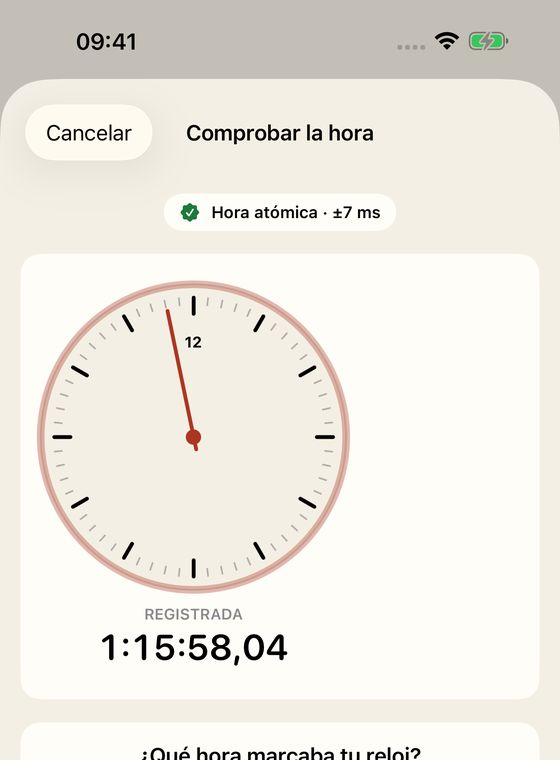
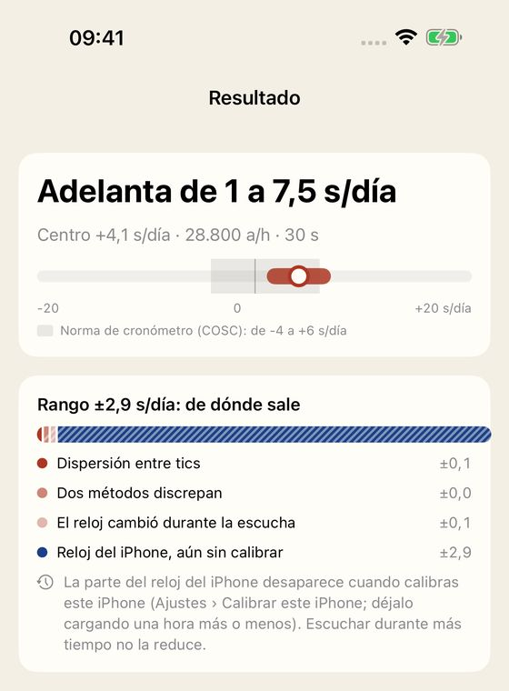
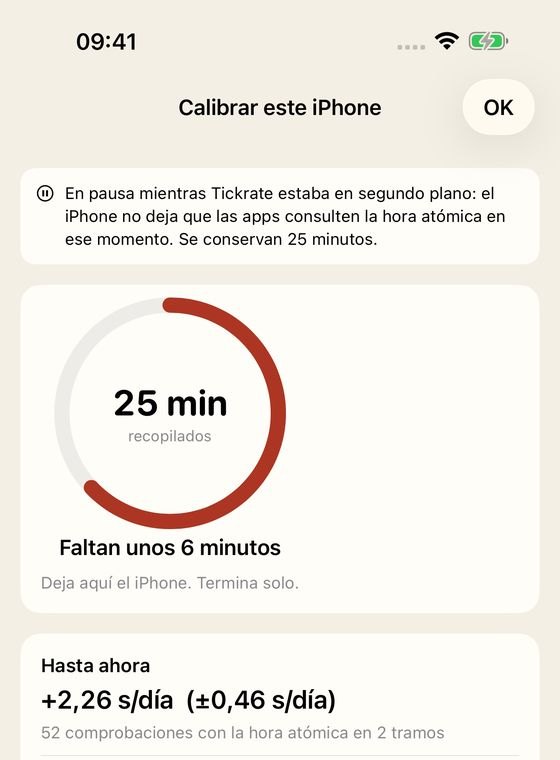

Tickrate
¿Cuántos segundos al día adelanta o atrasa tu reloj mecánico?
Tickrate es una app para iPhone que te dice cuántos segundos al día adelanta o atrasa tu reloj mecánico.
Compara el reloj con la hora atómica con unas horas o días de diferencia para obtener su marcha diaria real, y también puede escuchar el tictac con el micrófono del iPhone para darte una estimación rápida, siempre como un rango.
Un reloj es gratis, con comprobaciones y escuchas ilimitadas; su historial muestra los últimos 30 días. Tickrate Unlimited, una compra única (7,99 US$ en Estados Unidos), desbloquea todos los relojes, el historial completo, la exportación y la importación.
Próximamente en el App Store
Cómo funciona
Comprobaciones con la hora atómica: la marcha real
Abre un reloj y toca Comprobar. Tickrate muestra la hora atómica; tú tocas en el momento en que el segundero llega a las 12. Vuelve a comprobar horas o días después y Tickrate traza una recta entre tus comprobaciones: su pendiente es la marcha diaria, con un rango. Con comprobaciones separadas un día, el margen es de unos ±0,4 segundos al día; separadas una semana, mucho menos.

Escucha: una estimación rápida
En un lugar silencioso, apoya el borde inferior del iPhone en la caja del reloj, junto a la corona, durante 20 a 60 segundos. Tickrate mide el tictac de dos formas independientes y muestra la marcha como un rango, indicando de qué se compone. Si las dos formas no coinciden, no muestra ningún número y explica por qué.

Calibra este iPhone, una sola vez
El reloj de audio de cada iPhone va un poco adelantado o atrasado, y eso desplaza cada escucha. Deja Tickrate abierto en el cargador durante una hora más o menos: mide el reloj de tu iPhone frente a la hora atómica y corrige todas las escuchas posteriores.

Tres formas de saber la marcha de tu reloj
| Tickrate (app para iPhone) | Cronocomparador | Comprobación manual con un reloj de referencia | |
|---|---|---|---|
| Qué necesitas | Un iPhone | Un aparato específico con micrófono de contacto | Un reloj preciso, una libreta y paciencia |
| Precio | Gratis para un reloj (comprobaciones y escuchas ilimitadas, historial de los últimos 30 días); compra única para más | Lo que cueste el aparato | Gratis |
| Precisión | Comprobaciones separadas un día: unos ±0,4 s/día. Escucha: un rango de unos ±0,5 a ±1 s/día con una señal limpia después de calibrar el iPhone; unos ±3 s/día antes | Depende del aparato | Tan buena como tu lectura del segundero, repartida entre los días que pasan entre lecturas |
| Tiempo necesario | Dos toques con horas o días de diferencia; o de 20 a 60 segundos de escucha | Alrededor de un minuto por posición | Días |
| Qué te dice | Marcha diaria (promedio en uso, o la de ese momento al escuchar) | Marcha, amplitud y error de batido, por posición | Marcha diaria promedio |
Las cifras de precisión de Tickrate vienen de nuestras propias pruebas (consulta Fuentes). No damos ninguna para los cronocomparadores porque depende del aparato.
Lo que Tickrate no puede hacer
- Para escuchar hace falta un lugar silencioso y que el iPhone toque la caja. Algunos relojes hacen un tictac demasiado débil para el micrófono de un teléfono.
- Los relojes de cuarzo y otros relojes electrónicos no se pueden medir escuchando. Las comprobaciones con la hora atómica funcionan con cualquier reloj que tenga segundero.
- Una escucha es una estimación de la marcha en ese momento y en esa posición. La marcha diaria real sale de comprobaciones con la hora atómica a lo largo de un día o más.
- Solo mide la marcha, no la amplitud ni el error de batido.
- Hasta que calibres el iPhone (alrededor de una hora en el cargador), los rangos de la escucha son más amplios.
- Solo para iPhone, con iOS 17 o posterior.
Preguntas
¿Se puede saber con el iPhone si un reloj mecánico adelanta o atrasa?
Sí. Tickrate lo hace de dos formas: comparar el reloj con la hora atómica con unas horas o días de diferencia da su marcha diaria real, con un margen de unos ±0,4 segundos al día si las comprobaciones están separadas un día. Escuchar el tictac durante 20 a 60 segundos da una estimación rápida de la marcha actual, mostrada como un rango.
¿Cómo compruebo la precisión de mi reloj sin cronocomparador?
Compáralo con un reloj preciso en dos momentos y divide la diferencia entre el tiempo transcurrido. Tickrate lo hace por ti: muestra la hora atómica, tú tocas cuando el segundero llega a las 12 y, tras la segunda comprobación, muestra la marcha en segundos al día. Tu tiempo de reacción es más o menos el mismo cada vez, así que se compensa casi por completo.
¿Cuántos segundos al día es normal que adelante o atrase un reloj mecánico?
Lo habitual va de unos pocos segundos a unas decenas de segundos al día, según el movimiento. Un cronómetro certificado debe tener una marcha media de entre −4 y +6 segundos al día en la prueba del COSC. Los movimientos automáticos económicos más extendidos tienen tolerancias más amplias: el NH35 de Seiko, por ejemplo, de −20 a +40 segundos al día. La posición, la carga del reloj y la temperatura cambian la marcha varios segundos al día, así que una sola medición es solo una foto del momento.
¿Qué precisión tiene medir con el micrófono del iPhone?
Unos ±0,5 a ±1 segundo al día: ese es el rango que da una escucha de 30 segundos con una señal limpia de un reloj moderno, una vez calibrado el reloj del propio iPhone. El reloj de audio de cada iPhone va un poco adelantado o atrasado (unos 2 segundos al día en el iPhone que medimos), así que antes de calibrar Tickrate amplía cada rango a unos ±3 segundos al día en lugar de ocultar ese error. Estas cifras salen de nuestras pruebas con grabaciones de relojes reales y tictac sintético, no de muchos iPhone distintos.
¿Por qué Tickrate muestra un rango y no un solo número?
Porque un número que parece exacto afirmaría más de lo que una escucha corta puede saber. El rango se calcula a partir de lo que puede mover el resultado: la dispersión entre tics, la diferencia entre dos métodos de medición independientes, los cambios del reloj mientras se escucha y el reloj del propio iPhone. La app muestra cuánto aporta cada parte y, cuando los dos métodos no coinciden, no muestra ningún número.
¿Qué hago si Tickrate no oye mi reloj?
Tickrate te lo dice, no da ningún número y te explica por qué. Prueba en un lugar silencioso, con el reloj boca arriba sobre una superficie acolchada y con el borde inferior del iPhone, donde está el micrófono, tocando la caja junto a la corona. Si aun así no lo oye, usa las comprobaciones con la hora atómica: funcionan con cualquier reloj que tenga segundero, en cualquier lugar.
¿Tickrate necesita conexión a internet?
Solo para la hora atómica. Las comprobaciones y la calibración del iPhone toman la hora de servidores de hora públicos: primero los de Apple, y los de Cloudflare o Google si Apple no responde. La escucha funciona sin conexión y, sin conexión, una comprobación usa el reloj del propio iPhone y lo indica.
¿Tickrate graba o sube el sonido?
No. El micrófono solo se usa mientras escuchas un reloj o calibras el iPhone, y el sonido se analiza en el iPhone y nunca se graba, guarda ni sube. No hay cuenta; tus relojes y resultados se quedan en tu iPhone, y puedes exportarlos como CSV o como archivo de copia de seguridad.
¿En qué se diferencia Tickrate de un cronocomparador?
Un cronocomparador mide más: marcha, amplitud y error de batido en cada posición, con un micrófono de contacto; Tickrate solo mide la marcha. Lo que aporta Tickrate es la visión a largo plazo: las comprobaciones con la hora atómica a lo largo de días dan la marcha media tal como usas realmente el reloj. Si ajustas movimientos o necesitas la amplitud y el error de batido, usa un cronocomparador.
¿Con qué relojes funciona Tickrate?
Las comprobaciones con la hora atómica funcionan con cualquier reloj que tenga segundero, mecánico o de cuarzo. La escucha funciona con relojes mecánicos de frecuencias estándar de 12.000 a 43.200 alternancias por hora, como 21.600 y 28.800; Tickrate puede detectar la frecuencia por sí solo. Los relojes de cuarzo no se pueden medir escuchando.
¿Cuánto cuesta Tickrate?
Un reloj es gratis, con comprobaciones, escuchas y calibraciones del iPhone ilimitadas; su historial y su gráfico muestran los últimos 30 días, y las entradas anteriores se conservan. Tickrate Unlimited es una compra única (7,99 US$ en Estados Unidos; el precio varía según el país), sin suscripción y sin cuenta. Desbloquea todos los relojes, el historial completo, la exportación e importación y la calibración con un reloj de cuarzo, y funciona con En familia.
Fuentes
- Prueba de cronómetro del COSC: marcha diaria media de −4 a +6 segundos. cosc.swiss
- Especificación de precisión del Seiko NH35: de −20 a +40 segundos al día (especificación del fabricante, según la reproduce Caliber Corner). calibercorner.com
- Cifras de Tickrate (±0,4 s/día con comprobaciones separadas un día, ±0,5 a ±1 s/día en una escucha limpia tras calibrar, ±3 s/día antes, unos 2 s/día para el reloj de audio de un iPhone): nuestras propias pruebas con grabaciones de relojes, señales sintéticas y un iPhone 17 Pro Max, noviembre de 2026.